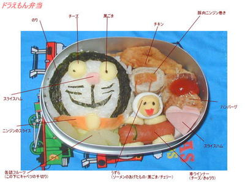
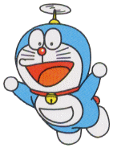
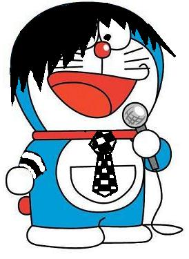
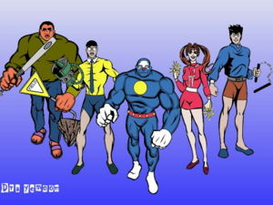

Anexo:Cosas inexplicables de Doraemon
 De: La Frikipedia, la enciclopedia extremadamente seria.
De: La Frikipedia, la enciclopedia extremadamente seria.
Artículo principal: Doraemon
 Otras teorías afirman que el dizque gato tuvo un trágico final en la cocina de un restaurante
chino.
Preguntas normales
- ¿Por qué Nobita se queda con cara de salido empanado cada vez que pasa Shizuka, si todos sabemos que es gay (incluido él)?
- ¿Por qué Nobita nunca aprende sus errores y usa el mismo aparato dos veces?
- ¿Por qué a Doraemon le llaman gato cósmico si viene del futuro y no del espacio?
- ¿Por qué Shizuka al final se casa con Nobita? ¿Es ciega, o sólo muy estúpida?
- ¿De qué cojones trabaja el padre de Nobita? ¿En una empresa? ¿¡En una empresa de qué!?
- ¿Por qué si Doraemon tiene unos instrumentos tan sofisticados no conspira para la dominación mundial?
- Si existe Dios, ¿no es su ausencia un poco sospechosa?
- ¿No debía estar muy colgado el creador para crear una serie tan estúpida?
- ¿Y por qué una serie tan estúpida es capaz de enganchar a gente de veintitantos? ¿Es que le echan droga?
- ¿Cómo es posible que Doraemon coja (o agarre, para los sensibles) cosas... ¡¡SI NO TIENE DEDOS!!?
- ¿Por qué guarda Nobita sus exámenes siempre en el mismo cajón? Si hay siempre se los pilla la madre...no escarmienta
- Si a E.T., aún disfrazado de fantasma, acabaron cogiéndolo los del FBI ¿cómo es que a Doraemon lo dejan en libertad? ¿Es que les hace favores sexuales?
- ¿Cómo consigue Gigante pegar y robar a gente inocente y aun así no lo detiene la pasma? ¿Acaso la soborna con droga?
- ¿Por qué Shizuka se baña tantas veces? ¿Se quiere arrancar la piel? La hemos visto bañándose unas tres veces por capítulo.
 Doraemon tras probar por primera vez el éxtasis.
- ¿Por qué si Nobita siempre entra en el lavabo de Shizuka, está siempre le perdona, pero antes de acabar el episodio se caga siempre en sus muertos?
- ¿Por qué cuando va Doraemon va andando por la calle va cantando la propia canción de la serie? que es, ¿un tipo de mensaje subliminal para dominar el mundo?
- ¿Por qué siempre sale Doraemon en las portadas de los comics? Y lo peor de todo, ¿por qué no se sorprende al verse a él mismo ahí?
- ¿Por qué Suneo tiene en cada episodio una mascota diferente de la cual presumir? ¿Qué hace con las de los episodios anteriores, las viola, o es que no les da de comer y se mueren a los tres días?
- ¿Por qué cuando Doraemon ve un ratón, coge de su bolsillo bazookas, bombas nucleares, o tanques? ¿Es legal tener todo ese tipo de cosas en el siglo XXII?
- ¿Por qué una mierda de bollo tiene nombres tan diversos como dorayaki, emparedado, empanadilla, pastelillo, emparedado de mermelada (que en realidad son judías que parecen chocolate), bollycao dokyo...
- ¿Por qué no hacen episodios impredecibles?
- ¿Por qué coño Shisuka se deja la ventana del baño abierta si sabe que Nobita va a aparecer por ahí? ¿y porque la ventana del baño es tan grande?
- ¿Por qué Suneo lleva ropa de los chinos si es tan rico?
- ¿Por qué las máquinas del siglo XXII interactúan con cosas anticuadas, como casetes, teles de tubo, etc.?
- ¿Cómo es que siempre llega tarde Nobita teniendo la puerta mágica?
- ¿El dinero de Tsuneo nunca se acaba?¿es su padre diputado político o algo por el estilo?
- ¿Por qué tanta gente tiene miedo a Gigante si entre todos a los que atormenta le pueden?
- ¿Por qué los padres de los protagonistas no tienen nombre? ¿Todos se llaman papá y mamá?
- ¿Por qué Doraemon ayuda a un niño retrasado, egocéntrico y quejica pudiendo salvar a África del hambre y la malaria usando una máquina que multiplicara alimentos o medicamentos?
- ¿Por qué Doraemon no tiene orejas, si es un gato? (Respondo: Porque un ratón se las comió las
bolas orejas))
- ¿Por qué sólo y exclusivamente Doraemon usa un aparato por episodio?
- ¿Por qué cuando a Doraemon se le pierde un aparato, no usa el bastón que busca?
- ¿Sabe acaso la madre de Nobita que tiene un cajón con el que viajar por el pasado y el futuro? ¿Acaso su madre no limpia ahí dentro?
- ¿Por qué cuando Nobita viaja al futuro Doraemon no está?
- ¿Por qué Nobita no usa el teléfono para pedir deseos?
- ¿Si Doraemon le deja a Nobita un aparato para parar el tiempo, porque no se folla a Shisuka si tanto le gusta?
- ¿Porque si Tsuneo es tan rico, va a un colegio de pobres y se junta con gente que no es de su clase social?
- ¿Por qué el 90% de los aparatos no sirven para nada?
- ¿Por qué Gigante no le tiene miedo a Nobita, sabiendo que Doraemon está de su bando? ¿y por qué Doraemon tiene miedo a Gigante?
- ¿Qué le pasó a los otros inventos?
- ¿Por qué todos los que están con Doraemon sufren continuamente?
- ¿Por qué cuando Doraemon busca novia, es Nobita el que le ayuda? ¿Es que es un buen ejemplo a seguir?
- ¿Por qué Doraemon no sale en las noticias?
- ¿Por qué Doraemon intenta ligar con gatas, en vez de follárselas sin preguntar, como hacen los gatos normales?
- ¿Por qué Nobita liga con Shisuka si se la puede follar así como así?
- ¿Por qué, aunque Doraemon esté en la serie, la vida de los personajes sigue como si no hubiera venido?
 Algunos dicen que DoraEMOn se volvió
emo y se suicidó...
- ¿Por qué en todas las películas de Doraemon, él mismo pierde su bolsillo, si ese es el centro de la serie? Es como si Aladdin perdiera su lámpara mágica.
- ¿Por qué han llegado a hacer tantas películas de Doraemon si los niños al salir del cine quieren suicidarse de lo mala que ha sido la experiencia? Será parte del plan para dominar el mundo...
- ¿Por qué en cada capítulo se le ven las bragas a Shizuka y/o desnuda en el baño? ¿Acaso quieren reclutar un ejército de niños satírico-salidos?
Doraemon tras probar por segunda vez el extasis.
- ¿Por qué no catalogan la serie como un medio para conspirar para la destrucción mundial?. Escuchen bien el final, la cancioncita de los mataos-marikitas... "somos los niños de la tierra (y solo son 4 (Doraemon no cuenta)), vamos a construir un país multicolor, y con flores que te dicen la la la"...( mensajes subliminales para engancharse a la maría), y por último, que pinta un avión, un tren, 5 chalaos en una alfombra, y el planeta? ¿Es publicidad barata para los medios aéreos y férreos? ¿Y la alfombra? ¿Quieren que todos cojamos la alfombra del trastero, y con cuatro mataos nos tiramos por la ventana cantando y fumando?
 Doraemon & Cia durante su corta carrera como vigilantes superheróicos
- ¿Por qué cuando el capítulo presenta una cosa tan simple como ir a un lugar en el que se desarrolla el capítulo, en vez de ir por la puerta mágica, van andando o volando?
- O mejor expresado: ¿para qué puñetas necesita el gorro-cóptero si tiene la puerta mágica?
- ¿Por qué Doraemon tiene objetos con los que podría mandar la tierra a tomar por culo o dominarla y nadie hace nada al respecto?
- Si en el futuro todo el mundo tiene los mismos aparatos de Doraemon, ¿por qué no se ha destruido el mundo en el futuro?
- ¿Por qué Shizuka siempre tiene la cara sonriente y los ojos inexpresivos? ¿A caso se droga?
- ¿Por qué Nobita, cuando tiene que entrar en la casa, y la madre está cabrea y le espera para dialogar con el 5 horas, entra por la puerta?? ¿Porque no lleva siempre un gilicóptero para esas situaciones? Es que no aprende el chaval...
- ¿Por qué los fanes de esta serie no hacen animaciones Hentai de ellos?
- ¿Por qué los chavales van a los conciertos de Gigante? ¿Tan difícil es poner la excusa de que tengo cáncer y no puedo ir?
- ¿Cuándo saldrá el verdadero padre de Gigante?
- ¿Cómo demonios se puede sacar tantos 0 en un curso tan fácil como 5º de primaria?
- ¿Por qué no atracan miles de bancos y se hacen asquerosamente ricos?
- ¿Por qué no coge el traje de invisibilidad o la puerta mágica y se compra los tebeos que quiera, o los juguetes que quiera?
- ¿Por qué el de la anterior edición ha dicho algo tan suave?
- ¿Por qué no viola a Shizuka o por lo menos la besa mientras esta duerme? ¿No es el sueño de su vida? ¡Pues que despierte, coño!
- ¿Por qué Suneo, que es tan rico, va a una escuela pública?
- ¿Cómo es que un robot duerme, come, bebe, folla, maltrata, ríe, llora y siente miedo por un simple ratón?
- ¿Cómo es que Doraemon no se ha aprovechado de Nobita y su hospitalidad para secuestrar a todos los de la casa, y dominar Japón?
- ¿Por qué un robot tan sofisticado como Doraemon (excepto en algunos factores) no se ha dedicado para otros fines más... como decirlo... beneficiosos para él y para el resto de la humanidad?
- ¿Si Gigante sabe perfectamente que canta fatal, por qué no se dedica a otra cosa como... no se... montar un puticlub de sardinas?
- ¿Por qué si Nobita está en 5º de primaria cuando le enfocan sus deberes salen cuentas como 3+2?
- ¿Y por qué son tan difíciles para Nobita las cuentas de ese tipo?
- ¿De qué están en realidad rellenos los dorayakis que gustan tanto a Nobita y a Doraemon como para que no se cansen de comérselos, de judías negras?
- ¿Por qué cada vez que Nobita necesita la puerta mágica Doraemon le dice que está estropeada o en el taller? ¿No tiene un arreglador instantáneo universal de cosas?
- ¿Por qué cuando Doraemon no le deja uno de sus objetos a Nobita, este en vez de enfadarse y/o ponerse a llorar no se lo roba del bolsillo de repuesto que está en el armario?
- ¿Por qué siempre que algunos de los personajes va a la compra les cabe todo justo en la cesta?
- Doraemon come, y vaya si come el mamón, pero, ¿Caga? Y si no lo hace ¿Disuelve los Dorayakis con ácido sulfúrico o los mata a
pollazos pedos directamente?
- ¿Por qué el cascabel que lleva Doraemon en el cuello nunca suena?
- Mejor dicho ¿Por qué lleva cascabel?
- ¿Por qué a Nobita le propinan siempre todo tipo de palizas y casi siempre se quedan las gafas intactas?
- ¿Por qué muchos de los inventos tienen efectos que también tienen otros inventos?
- ¿Por qué nadie se desnuca usando el gorro-coptero si usando una única sujeción en la cabeza sujeta todo el peso de tu cuerpo?
- ¿Y qué pasa si al gilicoptero se le acaban las pilas en pleno vuelo? A tomar po'l culo
- ¿No debería empezar la Intro con niños cadáver flotando en el cielo?
- ¿Cuantas mierdas de inventos tiene Doraemon? ¿Acaso hay un invento que inventa inventos
de mierda que fueran transportados al bolsillo de cósmico?
- ¿Quién es el que invento el invento que inventa inventos
de mierda que fueran transportados al bolsillo de cósmico?
- ¿Por qué coño no pide Nobita una orden de alejamiento contra sus "amigos"?
- ¿Por qué cuando Nobita se encuentra con su profesor en la calle en vez de mentirle le dice la verdad el muy gilipollas?
- ¿Que intentan transmitir a los niños que ven la serie, que aunque tengas problemas alguien los solucionará pero al rato volverás a ser desgraciado y vuelta a empezar?
- ¿por qué Doraemon usa tanques bombas y otros tipos de armas contra los ratones y se asusta de gigante? ¿Acaso es subnormal? (respuesta; si)
- ¿Por qué es Nobita el único que se siente atraído por las chicas si todos sabemos que es maricón?
- ¿Por qué la gente cuando ve a Doraemon por la calle no se asusta?... Vamos, yo echaría a correr si veo una deformidad así caminando por la calle. ¿Es que acaso es famoso?
- ¿Cómo puede la madre de Nobita hablar 5 horas seguidas sin parar?
- ... ¿Y cómo puede Nobita escuchar a su madre durante 5 horas?
- ¿Por qué cuando Doraemon camina se escucha ese sonido tan extraño? (Porque le rozan los testículos)
- ¿Por qué Nobita no le dice a su madre de una puta vez que sus amigos
le violan le maltratan?
- ¿Por qué están en Japón las alcantarillas abiertas por las calles? ¿Qué quieren que a la gente le pase lo mismo que le pasa diariamente a Nobita? Además, que pestazo.
- ¿Por qué no se cambian de ropa nunca? (Aquí y en cualquier serie de dibujos animados)
- ¿Por qué tiene Doraemon ese cabezón? (Esto es por putear)
- ¿Por qué cuando a Nobita no le invita Suneo a un sitio, se complica la vida con aparatos raritos en
vez de usar la puerta mágica? (Respuesta: Porque es gilipollas)
- ¿Por qué, cuando Nobita viaja al futuro, Doraemon no está? ¿Se ha muerto? ¿Si se ha muerto porque a veces amenaza a Nobita con "volverse al futuro"? Es inexplicable (PREGUNTA REPETIDA)
- ¿Cómo es posible que Nobita no repita el curso o si no le pongan en algún refuerzo?
- ¿Por qué en algunos capítulos la madre de Nobita trata a Doraemon como su hijo?
- ¿Doraemon tiene padres?
- En tal caso de que a Dorami le asusten las cucarachas, ¿¿A Doraemon no le asusta una mierda??
- Ahora al revés, ¿Dorami no se echa a correr si ve ratones?
- ¿Cuántos episodios hay del gato susodicho?
- ¿Leíste todo lo anterior?
Preguntas PRO
- ¿A Nobita, después de tanta mierda diaria, nunca decide cambiar su rutina?
 Anexos Anexos
|
|
|
Autor(es):
- DeathZelta
- FREEZER
- Dark temptation
- Zowle
- Albertwo
- Harry El del Pote
- Docodrilo
- Gñapero Solitario
- Genericool
- 7nico7
Frikipedia 2005-2016, Licencia
GFDL 1.2 - Extraído por FrikiLeaks